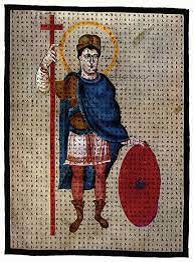
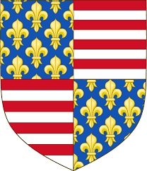
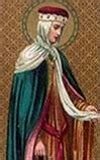
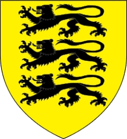
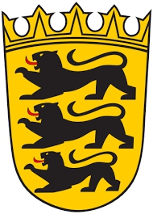

393795787524 Emperor Ludvig I of Romanska riket & King of the Franks
* 778-04-16 Chasseneuil, Frankrike
† 840-06-20 Mainz, Tyskland
Kejsare & Kung
Blev 62 år
* 778-04-16 Chasseneuil, Frankrike
† 840-06-20 Mainz, Tyskland
Kejsare & Kung
Blev 62 år

393795754016 Kejsare Charlemagne (Karl den Store)
* 742-04-02 Liege, Frankrike
† 814-01-28 Aachen, Cologne, Tyskland
Romersk Kejsare, Frankisk Kung m.m
Blev 71 år
* 742-04-02 Liege, Frankrike
† 814-01-28 Aachen, Cologne, Tyskland
Romersk Kejsare, Frankisk Kung m.m
Blev 71 år
787591508032 King Pipin III (den lille)
* 714
† 768 Saint-Denis, France
Kung av Frankerna
Blev högst 54 år
* 714
† 768 Saint-Denis, France
Kung av Frankerna
Blev högst 54 år

1575183016064 Duke Charles Martell
* 686 Herstal, Belgien
† 741 Quierzy, France
Rikshovmästare hos Frankerna Hertig av Austrasia
Blev högst 55 år
* 686 Herstal, Belgien
† 741 Quierzy, France
Rikshovmästare hos Frankerna Hertig av Austrasia
Blev högst 55 år

1575183016065 Duchess Rotrude (Chrodtrudis) de Treves
* 690 Treves, Languedok-Roussillion, France
† 724 Triere, Rheinland-Pfalz, Tyskland
Hertiginna av Austrasia
Blev högst 34 år
* 690 Treves, Languedok-Roussillion, France
† 724 Triere, Rheinland-Pfalz, Tyskland
Hertiginna av Austrasia
Blev högst 34 år

787591508033 Queen Betrada (Berta Storfot) de Laon
* 725 France
† 783 Choisy-au-Bac, France
Drottning av Frankerna
Blev högst 58 år
* 725 France
† 783 Choisy-au-Bac, France
Drottning av Frankerna
Blev högst 58 år
1575183016066 Count Charibert de Laon
* omkring 677 Laon, France
† 747 Laon, France
Greve av Laon
Blev ca 70 år
* omkring 677 Laon, France
† 747 Laon, France
Greve av Laon
Blev ca 70 år

1575183016067 Gisela de Aquitaine
* omkring 680
* omkring 680
393795754017 Empress Hildegard of Vinzgau
* 754 Schwaben, Tyskland
† 783-04-30 Thionville, Frankrike
Romersk Kejsarinna
Blev högst 29 år
* 754 Schwaben, Tyskland
† 783-04-30 Thionville, Frankrike
Romersk Kejsarinna
Blev högst 29 år

787591508034 Duke Gerald of Vinzgau
* omkring 720 Anglachgau, Schwaben, Tyskland
† 779 Tyskland
Hertig av Swabia. Greve av Anglachgau & Kraichgau & Vinzgau
Blev ca 59 år
* omkring 720 Anglachgau, Schwaben, Tyskland
† 779 Tyskland
Hertig av Swabia. Greve av Anglachgau & Kraichgau & Vinzgau
Blev ca 59 år

787591508035 Countesse Imma (Emma) of Alemannia
* 727 Alemannia, Aachen, Tysklamd
† 798 Aachen, Cologne, Tyskland
Grevinna av Vinzgau
Blev högst 71 år
* 727 Alemannia, Aachen, Tysklamd
† 798 Aachen, Cologne, Tyskland
Grevinna av Vinzgau
Blev högst 71 år